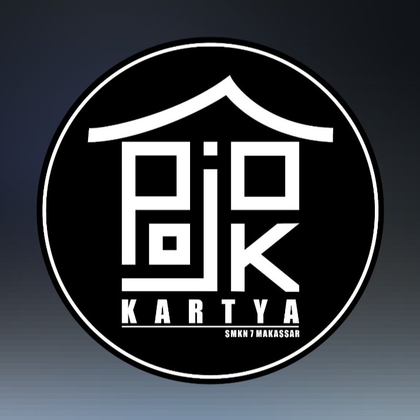

Ekstrakulikuler SMKN 7 Makassar

OJS
Jurnalistik SMKN 7 Makassar adalah organisasi siswa yang bergerak di bidang kepenulisan, pemberitaan, dokumentasi, dan publikasi kegiatan sekolah. Organisasi ini menjadi wadah bagi siswa untuk mengembangkan kemampuan menulis, fotografi, videografi, desain, dan media digital. Jurnalistik berperan penting dalam menyampaikan informasi sekolah secara aktif, kreatif, dan bertanggung jawab.

POJOK KARYA
Pojok Karya SMKN 7 Makassar adalah kegiatan ekstrakurikuler kreatif yang menjadi wadah pengembangan bakat seni siswa, baik dalam bidang karya visual maupun seni musik tradisional dan modern. Pojok Karya menjadi tempat siswa mengekspresikan ide, kreativitas, serta mengasah kemampuan seni secara aktif dan positif.